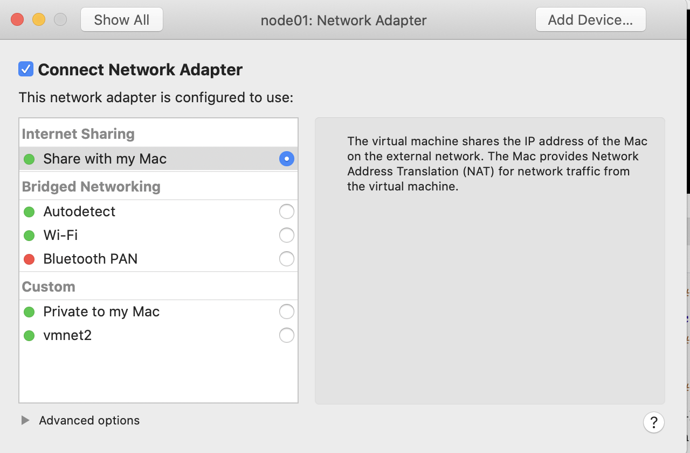
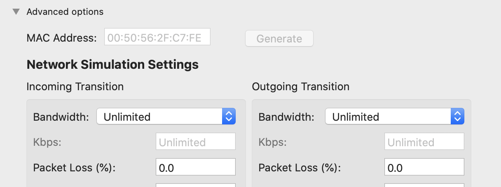

大数据环境搭建(MAC) 1. Linux 环境配置 1.1 Vmware Funsion Linux网络配置 1.1.1 查看本机网络 1 2 3 4 5 6 7 # 1. 查看vmnet网络配置，本机mac上 cat /Library/Preferences/VMware\ Fusion/vmnet8/nat.conf # 2. 可以看到如下部分信息，记住下面信息，用来配置linux [host] # NAT gateway address ip = 192.168.83.2 netmask = 255.255.255.0
1.1.2 配置linux网络
setting -> Network Adapter -> Share with my msc 如下图

点击上图左下角 Advanced options，点击Generate（生成MAC Address）

启动虚拟机
1 2 3 4 5 6 7 8 9 10 11 12 13 14 15 16 17 # 1. 修改配置文件 sudo vi /etc/sysconf/network-scripts/ifcg-ens192 # 2. 修改下面内容 # 改为静态 BOOTPROTO=static ONBOOT=yes # 与上面网段保持一致 IPPADDR=192.168.83.100 # 与上面一致 NETMASK=255.255.255.0 # 与上面ip一致 GATEWAY=192.168.83.2 DNS1=8.8.8.8 # 3. 修改之后，重启network service network restart
关闭防火墙，selinux
1 2 3 4 5 6 7 8 # 关闭 systemctl stop firewalld # 永久关闭 systemctl disable firewalld # 关闭selinux，修改下面文件内容 vi /etc/selinux/config #进入selinux设置文件 SELINUX=disabled
1.2. Linux 设置免密登陆 1.2.1 设置用户 & 权限 1 2 3 4 5 6 7 8 9 10 11 # 1. 创建hadoop用户 useradd hadoop #添加hadoop用户 passwd hadoop #给hadoop用户添加密码 hadoop #密码设为hadoop # 2. 设置用户权限 visudo #进入用户权限配置文件 # root ALL=(ALL) ALL hadoop ALL=(ALL) ALL # 给hadoop用户添加所有权限 # 3. 切换到hadoop用户 su - hadoop # 加上- 表示切换同时拥有权限
1.2.2 免密登陆
修改/etc/hosts 文件
1 2 3 4 5 6 sudo vi /etc/hosts # 添加如下内容 192.168.83.100 node01 192.168.83.110 node02 192.168.83.120 node03
配置免密登陆
1 2 3 4 5 6 7 8 9 10 11 12 13 14 15 16 17 18 # 1. hadoop用户下执行下列命令，必须！ # 下面操作node01，node02，node03 都执行，回车next。 ssh-keygen -t rsa #生成公钥 # 2. 三台机器的公钥全部拷贝到node01 ssh-copy-id node01 # 3. 第一台机器执行，“:PWD”的意思是：拷贝目标文件位置和node01的位置一致。 cd /home/hadoop/.ssh/ scp authorized_keys node02:$PWD #将node01的授权文件拷贝到node02 scp authorized_keys node03:$PWD #将node01的授权文件拷贝到node03 # 4. 验证免密登录 # 在node01执行 ssh node02 #在node01登录node02，不需要密码就ok ssh node03 #在node01登录node02，不需要密码就ok # 回到node01 logout
1.3 时间同步 1.3.1 同步阿里云 1 2 3 4 5 6 7 # 安装ntpdate sudo yum -y install ntpdate crontab -e */1 * * * * /usr/sbin/ntpdate time1.aliyun.com # 如果时间不通可以执行 sudo ntpdate -u asia.pool.ntp.org
1.3.2 同步node01时间 1 2 3 4 5 6 7 8 9 10 11 12 13 14 15 16 17 18 19 20 21 22 23 24 25 26 27 28 29 30 # 1. 安装ntp软件（所有） sudo yum -y install ntp # 2. 设置时区为中国上海（所有） timedatectl set-timezone Asia/Shanghai # 3. node01启动ntp服务，作为服务端供其他节点同步时间 systemctl start ntpd # 4. node01设置开机启动 systemctl enable ntpd # 5.修改配置 node01上 sudo vi /etc/ntp.conf # 注释掉以下四行，添加最后两行。对应自己的vmnt8内容 # server 0.centos.pool.ntp.org iburst # server 1.centos.pool.ntp.org iburst # server 2.centos.pool.ntp.org iburst # server 3.centos.pool.ntp.org iburst restrict 192.168.83.2 mask 255.255.255.0 nomodify notrap server 127.127.1.0 # 5.1 node02 node03修改配置 sudo vi /etc/sysconfig/ntpdate # 修改为 yes SYNC_HWCLOCK=yes # 6. 重启服务 systemctl restart ntpd
2.Hadoop环境搭建 2.1 配置hadoop-env.sh 1 2 3 4 5 # hadoop 用户下 su - hadoop vi /kfly/install/hadoop-2.6.0-cdh5.14.2/etc/hadoop/hadoop-env.sh export JAVA_HOME=/kfly/install/jdk1.8.0_141 #修改为此变量
2.2 配置core-site.xml 1 2 # 在hadoop用户下打开配置文件： vi /kfly/install/hadoop-2.6.0-cdh5.14.2/etc/hadoop/core-site.xml
1 2 3 4 5 6 7 8 9 10 11 12 13 14 15 16 17 18 19 20 21 22 23 24 25 26 27 28 29 30 31 32 <configuration > <property > <name > fs.defaultFS</name > <value > hdfs://node01:8020</value > </property > <property > <name > hadoop.tmp.dir</name > <value > /kfly/install/hadoop-2.6.0/hadoopDatas/tempDatas</value > </property > <property > <name > io.file.buffer.size</name > <value > 4096</value > </property > <property > <name > fs.trash.interval</name > <value > 10080</value > <description > 检查点被删除后的分钟数。 如果为零，垃圾桶功能将被禁用。 该选项可以在服务器和客户端上配置。 如果垃圾箱被禁用服务器端，则检查客户端配置。 如果在服务器端启用垃圾箱，则会使用服务器上配置的值，并忽略客户端配置值。 </description > </property > <property > <name > fs.trash.checkpoint.interval</name > <value > 0</value > <description > 垃圾检查点之间的分钟数。 应该小于或等于fs.trash.interval。 如果为零，则将该值设置为fs.trash.interval的值。 每次检查指针运行时， 它都会从当前创建一个新的检查点，并删除比fs.trash.interval更早创建的检查点。 </description > </property > </configuration >
2.3 配置hdfs-site.xml 1 2 # 在hadoop用户下打开配置文件： vi /kkb/install/hadoop-2.6.0/etc/hadoop/hdfs-site.xml
1 2 3 4 5 6 7 8 9 10 11 12 13 14 15 16 17 18 19 20 21 22 23 24 25 26 27 28 29 30 31 32 33 34 35 36 37 38 39 40 41 42 43 44 45 46 47 48 49 50 51 52 53 54 <configuration > <property > <name > dfs.namenode.secondary.http-address</name > <value > node01:50090</value > </property > <property > <name > dfs.namenode.http-address</name > <value > node01:50070</value > </property > <property > <name > dfs.namenode.name.dir</name > <value > file:///kfly/install/hadoop-2.6.0/hadoopDatas/namenodeDatas</value > </property > <property > <name > dfs.datanode.data.dir</name > <value > file:///kfly/install/hadoop-2.6.0/hadoopDatas/datanodeDatas</value > </property > <property > <name > dfs.namenode.edits.dir</name > <value > file:///kfly/install/hadoop-2.6.0/hadoopDatas/dfs/nn/edits</value > </property > <property > <name > dfs.namenode.checkpoint.dir</name > <value > file:///kfly/install/hadoop-2.6.0/hadoopDatas/dfs/snn/name</value > </property > <property > <name > dfs.namenode.checkpoint.edits.dir</name > <value > file:///kfly/install/hadoop-2.6.0/hadoopDatas/dfs/nn/snn/edits</value > </property > <property > <name > dfs.replication</name > <value > 3</value > </property > <property > <name > dfs.permissions</name > <value > false</value > </property > <property > <name > dfs.blocksize</name > <value > 134217728</value > </property > </configuration >
2.4 配置mapred-site.xml 1 2 3 4 5 # 在hadoop用户下操作,进入指定文件夹： cd /kfly/install/hadoop-2.6.0-cdh5.14.2/etc/hadoop/ # 由于原来没有mapred-site.xml配置文件，需要根据模板复制一份： cp mapred-site.xml.template mapred-site.xml vi /kfly/install/hadoop-2.6.0-cdh5.14.2/etc/hadoop/mapred-site.xml
1 2 3 4 5 6 7 8 9 10 11 12 13 14 15 16 17 18 19 <configuration > <property > <name > mapreduce.framework.name</name > <value > yarn</value > </property > <property > <name > mapreduce.job.ubertask.enable</name > <value > true</value > </property > <property > <name > mapreduce.jobhistory.address</name > <value > node01:10020</value > </property > <property > <name > mapreduce.jobhistory.webapp.address</name > <value > node01:19888</value > </property > </configuration >
2.5 配置yarn-site.xml 1 2 # 在hadoop用户下操作 vi /kfly/install/hadoop-2.6.0/etc/hadoop/yarn-site.xml
1 2 3 4 5 6 7 8 9 10 11 12 13 14 15 16 17 18 19 20 21 22 23 24 25 26 27 28 29 30 31 32 33 34 35 36 37 38 39 40 41 42 43 <configuration > <property > <name > yarn.resourcemanager.hostname</name > <value > node01</value > </property > <property > <name > yarn.nodemanager.aux-services</name > <value > mapreduce_shuffle</value > </property > <property > <name > yarn.log-aggregation-enable</name > <value > true</value > </property > <property > <name > yarn.log.server.url</name > <value > http://node01:19888/jobhistory/logs</value > </property > <property > <name > yarn.log-aggregation.retain-seconds</name > <value > 2592000</value > </property > <property > <name > yarn.nodemanager.log.retain-seconds</name > <value > 604800</value > </property > <property > <name > yarn.nodemanager.log-aggregation.compression-type</name > <value > gz</value > </property > <property > <name > yarn.nodemanager.local-dirs</name > <value > /kkb/install/hadoop-2.6.0-cdh5.14.2/hadoopDatas/yarn/local</value > </property > <property > <name > yarn.resourcemanager.max-completed-applications</name > <value > 1000</value > </property > </configuration >
2.6 编辑slaves 此文件用于配置集群有多少个数据节点,我们把node2，node3作为数据节点,node1作为集群管理节点
1 2 3 4 5 6 # 在hadoop用户下操作 vim /kfly/install/hadoop-2.6.0/etc/hadoop/slaves node01 #添加 node02 #添加 node03 #添加
2.7 创建文件存放目录 1 2 3 4 5 6 7 # 在hadoop用户下操作 mkdir -p /kfly/install/hadoop-2.6.0-cdh5.14.2/hadoopDatas/tempDatas mkdir -p /kfly/install/hadoop-2.6.0-cdh5.14.2/hadoopDatas/namenodeDatas mkdir -p /kfly/install/hadoop-2.6.0-cdh5.14.2/hadoopDatas/datanodeDatas mkdir -p /kfly/install/hadoop-2.6.0-cdh5.14.2/hadoopDatas/dfs/nn/edits mkdir -p /kfly/install/hadoop-2.6.0-cdh5.14.2/hadoopDatas/dfs/snn/name mkdir -p /kfly/install/hadoop-2.6.0-cdh5.14.2/hadoopDatas/dfs/nn/snn/edits
2.8 拷贝到其他节点 1 2 3 4 5 # 分发到各个节点下,$PWD 相同目录 scp -r hadoop-2.6.0 node02:$PWD # 分发配置文件 scp /etc/profile node02:$PWD
2.9 格式化节点 1 2 3 4 5 # 下面命令只在node01上执行 hdfs namenode -format #格式化 # 启动 start-all.sh
1.10 访问
3. hive环境搭建 3.1 mysql安装 1 2 3 4 5 6 7 8 9 10 11 12 13 14 15 16 17 18 19 20 21 22 23 24 25 26 27 28 29 30 31 32 33 34 35 36 # 安装wget sudo yum install wget # 1. 换源 # 1.1 备份系统源 sudo mv /etc/yum.repos.d/CentOS-Base.repo /etc/yum.repos.d/CentOS-Base.repo.backup # 1.2 下载阿里云CENTOS7镜像文件 wget -O /etc/yum.repos.d/CentOS-Base.repo http://mirrors.aliyun.com/repo/Centos-7.repo # 1.3 清理缓存、生成新的缓存 sudo yum clean all sudo yum makecache # 1.4 更新源 sudo yum update -y # 2. 使用yum安装MySQL,下载并安装MySQL官方的 Yum Repository sudo wget -i -c http://dev.mysql.com/get/mysql57-community-release-el7-10.noarch.rpm sudo yum -y install mysql57-community-release-el7-10.noarch.rpm sudo yum -y install mysql-community-server # 3. 启动mysql，查看运行状态 systemctl start mysqld.service systemctl status mysqld.service # 4. 找出默认密码如下图所示 sudo grep "password" /var/log/mysqld.log # 5. 登陆、修改密码 mysql -uroot -p # 回车后会提示输入密码 ALTER USER 'root'@'localhost' IDENTIFIED BY 'new password'; # 注意： 如果失败，修改密码策略,先修改一个复杂的密码，在修改策略，修改密码 ALTER USER 'root'@'localhost' IDENTIFIED BY 'z?guwrBhH7p>'; set global validate_password_policy=0; set global validate_password_policy=1; # 6. 设置mysql可以外部连接 grant all on *.* to root@'%' identified by '数据库密码';
3.2 hive安装 3.2.1 下载hive的安装包
3.2.2 hive-env.sh 1 2 3 4 5 6 vim hive-env.sh # 配置HADOOP_HOME路径 export HADOOP_HOME=/kfly/install/hadoop-2.6.0 # 配置HIVE_CONF_DIR路径 export HIVE_CONF_DIR=/kfly/install/hive-1.1.0-cdh5.14.2/conf
3.2.3 hive-site.xml 1 2 3 4 5 6 7 8 9 10 11 12 13 14 15 16 17 18 19 20 21 22 23 24 25 26 27 28 29 30 31 32 <? xml-stylesheet type="text/xsl" href="configuration.xsl" ?> <configuration > <property > <name > javax.jdo.option.ConnectionURL</name > <value > jdbc:mysql://node02:3306/hive?createDatabaseIfNotExist=true&characterEncoding=latin1&useSSL=false</value > </property > <property > <name > javax.jdo.option.ConnectionDriverName</name > <value > com.mysql.jdbc.Driver</value > </property > <property > <name > javax.jdo.option.ConnectionUserName</name > <value > root</value > </property > <property > <name > javax.jdo.option.ConnectionPassword</name > <value > 123456</value > </property > <property > <name > hive.cli.print.current.db</name > <value > true</value > </property > <property > <name > hive.cli.print.header</name > <value > true</value > </property > <property > <name > hive.server2.thrift.bind.host</name > <value > node02</value > </property > </configuration >
3.2.4 日志路径 1 2 3 4 vim hive-log4j.properties # 更改以下内容，设置我们的日志文件存放的路径 hive.log.dir=/kkb/install/hive-1.1.0-cdh5.14.2/logs/
3.4.5 lib包 1 2 ps: ==需要将mysql的驱动包上传到hive的lib目录下== * 例如 mysql-connector-java-5.1.38.jar
4. zookeeper环境搭建 5. HBase环境搭建 6. Flume环境搭建 7. Sqoop环境搭建 8. zakaban环境搭建